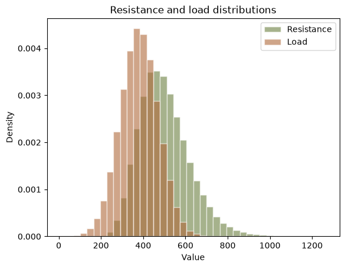
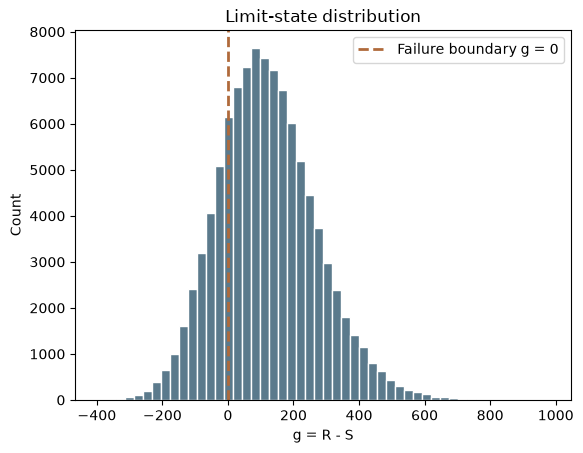
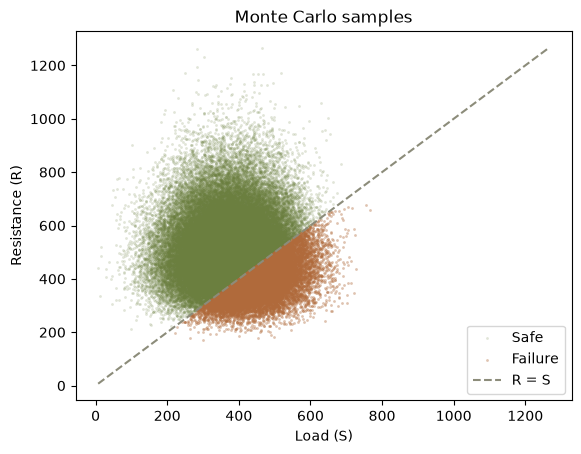
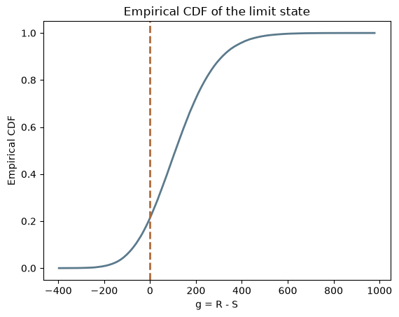

import corehydropy as ch
import matplotlib.pyplot as plt
import numpy as np
import pandas as pd22. Reliability analysis
Ported from reliability_analysis.py in the USACE-RMC Numerics-Python-Examples repository (0BSD licensed). The upstream script drives the C# Numerics.dll through pythonnet; this version uses corehydropy, whose compiled core is a validated C++ port of the same library. The R version of this example uses the same core and prints the same numbers.
This example runs a Monte Carlo reliability analysis of the classic resistance-minus-load limit state. A component fails when the load S it carries exceeds the resistance R it can supply, so the limit-state function is g = R - S and failure is the event g <= 0. Simulating both random variables many times estimates the failure probability Pf directly, and the reliability index beta = -Φ-1(Pf) restates that probability on a standard-normal scale.
What you’ll learn
- How to model a log-normal resistance and a Normal load with
corehydropy. - How to estimate a failure probability and reliability index by Monte Carlo simulation.
- How the port’s
LnNormalfamily replaces the upstream base-eLogNormalworkaround.
Setup
The upstream script spends about forty lines resolving Numerics.dll from the NuGet cache and loading the CoreCLR runtime before it can start. None of that exists here.
Define the random variables
Resistance R is log-normal with a physical-space mean of 500 and standard deviation of 120. Load S is Normal with mean 380 and standard deviation 90.
The upstream script has to work for its log-normal: the C# LogNormal class is base-10 and takes log-space parameters, so the script converts the physical mean and standard deviation to (mu_ln, sigma_ln) by hand and then mutates resistance_dist.Base = e. That .Base mutation is not exposed by this port. Instead the port ships LnNormal, the library’s base-e log-normal family, and LnNormal is parameterized in real space: you pass the physical mean and standard deviation directly, and the class performs the same moment conversion internally (its DirectMethodOfMoments is exactly the algebra the upstream script writes out). The whole construction collapses to one line.
To show the two parameterizations agree, the cell below repeats the upstream hand conversion and checks it against the fitted family: a log-normal’s median is exp(mu_ln), and the physical moments round-trip.
resistance_mean, resistance_std = 500.0, 120.0
resistance_dist = ch.Distribution("LnNormal", [resistance_mean, resistance_std])
load_dist = ch.Distribution("Normal", [380.0, 90.0])
# The upstream hand conversion, kept only as a cross-check
sigma2_ln = np.log1p((resistance_std / resistance_mean) ** 2)
mu_ln = np.log(resistance_mean) - 0.5 * sigma2_ln
print(f"hand-converted mu_ln = {mu_ln:.6f}, sigma_ln = {np.sqrt(sigma2_ln):.6f}")
print(f"exp(mu_ln) = {np.exp(mu_ln):.10f}")
print(f"LnNormal median = {resistance_dist.quantile(0.5):.10f}")
m = resistance_dist.moments()
print(f"LnNormal mean = {m['mean']:.6f}, sd = {m['sd']:.6f} (round-trips to 500, 120)")hand-converted mu_ln = 6.186607, sigma_ln = 0.236648
exp(mu_ln) = 486.1936509903
LnNormal median = 486.1936509903
LnNormal mean = 500.000000, sd = 120.000000 (round-trips to 500, 120)Monte Carlo simulation
Draw 100,000 samples of each variable with the upstream seeds (42 for resistance, 43 for load). The port keeps the C# Mersenne Twister bit-exact, so the streams below are the same numbers the upstream script draws from Numerics.dll, and the R twin draws them identically.
n_samples = 100_000
r = np.asarray(resistance_dist.random(n_samples, seed=42))
s = np.asarray(load_dist.random(n_samples, seed=43))
g = r - sFailure probability and reliability index
Pf is the fraction of samples with g <= 0, and beta = -Φ-1(Pf). The upstream script computes beta with scipy.stats.norm.ppf; here the port’s own standard Normal inverse CDF supplies the same function, and the R twin uses qnorm and prints the identical value.
n_fail = int(np.sum(g <= 0.0))
pf = float(np.mean(g <= 0.0))
beta = -ch.Distribution("Normal", [0.0, 1.0]).quantile(pf)
summary_df = pd.DataFrame(
{
"Metric": [
"Samples", "Failures", "Mean resistance", "Std resistance",
"Mean load", "Std load", "Pf", "beta",
],
"Value": [
n_samples, n_fail, np.mean(r), np.std(r, ddof=1),
np.mean(s), np.std(s, ddof=1), pf, beta,
],
}
)
print("Reliability analysis summary:")
print(summary_df.to_string(index=False, float_format=lambda v: f"{v:,.6f}"))Reliability analysis summary:
Metric Value
Samples 100,000.000000
Failures 21,423.000000
Mean resistance 499.859997
Std resistance 119.782693
Mean load 380.328623
Std load 89.901540
Pf 0.214230
beta 0.791830The first ten simulated samples, as the upstream script prints them:
sample_df = pd.DataFrame({"Resistance": r[:10], "Load": s[:10], "g = R - S": g[:10]})
print("First 10 simulated samples:")
print(sample_df.to_string(index=False, float_format=lambda v: f"{v:,.3f}"))First 10 simulated samples:
Resistance Load g = R - S
450.751 271.993 178.758
591.622 379.292 212.330
718.745 404.920 313.825
392.708 266.140 126.569
562.875 280.055 282.820
583.531 286.246 297.285
515.811 316.603 199.207
515.240 294.881 220.360
382.744 339.696 43.048
470.773 459.355 11.418Plots
The upstream script draws one 2x2 figure; here the same four panels are drawn as separate figures at the site’s default size. First, the two input distributions overlaid:
bins = np.linspace(min(r.min(), s.min()), max(r.max(), s.max()), 41)
plt.hist(r, bins=bins, density=True, alpha=0.6, color="#6b7f3f",
edgecolor="white", label="Resistance")
plt.hist(s, bins=bins, density=True, alpha=0.6, color="#b06a3b",
edgecolor="white", label="Load")
plt.xlabel("Value")
plt.ylabel("Density")
plt.title("Resistance and load distributions")
plt.legend()
plt.show()
The limit-state distribution. Everything left of the dashed line is a failure:
plt.hist(g, bins=50, color="#5b7a8c", edgecolor="white")
plt.axvline(0, color="#b06a3b", linestyle="--", linewidth=2, label="Failure boundary g = 0")
plt.xlabel("g = R - S")
plt.ylabel("Count")
plt.title("Limit-state distribution")
plt.legend()
plt.show()
The samples in (load, resistance) space. Failures are the points below the R = S line:
fail = g <= 0
plt.scatter(s[~fail], r[~fail], s=4, alpha=0.2, color="#6b7f3f",
linewidths=0, label="Safe")
plt.scatter(s[fail], r[fail], s=4, alpha=0.4, color="#b06a3b",
linewidths=0, label="Failure")
lim = [min(s.min(), r.min()), max(s.max(), r.max())]
plt.plot(lim, lim, "--", color="#8c8c7a", linewidth=1.5, label="R = S")
plt.xlabel("Load (S)")
plt.ylabel("Resistance (R)")
plt.title("Monte Carlo samples")
plt.legend()
plt.show()
And the empirical CDF of g. Its value at the dashed line is Pf:
g_sorted = np.sort(g)
cdf = np.arange(1, n_samples + 1) / n_samples
plt.plot(g_sorted, cdf, color="#5b7a8c", linewidth=2)
plt.axvline(0, color="#b06a3b", linestyle="--", linewidth=2)
plt.xlabel("g = R - S")
plt.ylabel("Empirical CDF")
plt.title("Empirical CDF of the limit state")
plt.show()
Reproduction check
The upstream file is a standalone script that prints its results at runtime; the repository does not embed them, so there are no upstream literals to pin against. The check below therefore asserts two things, stated plainly: internal consistency (the LnNormal physical moments round-trip and the upstream hand conversion reproduces the internal one), and cross-language identity (the R twin asserts exactly the same literals, which only pass because the seeded draws, Pf, and beta are fully deterministic and bit-identical in both languages).
| Quantity | Upstream C# | This port | Status |
|---|---|---|---|
| First resistance draw (seed 42) | not embedded upstream | 450.7507979426037 | exact (cross-language) |
| First load draw (seed 43) | not embedded upstream | 271.992998170271 | exact (cross-language) |
| First limit-state value g | not embedded upstream | 178.7577997723327 | exact (cross-language) |
| Failures out of 100,000 | not embedded upstream | 21423 | exact (cross-language) |
| Pf | not embedded upstream | 0.21423 | exact (cross-language) |
| beta | not embedded upstream | 0.7918296694786122 | exact (cross-language) |
LnNormal(500, 120) mean, sd |
500, 120 by construction | m['mean'], m['sd'] |
exact (round trip, 1e-12) |
The cell below fails the notebook if any value drifts.
# Upstream: examples/reliability_analysis.py (standalone script, prints at runtime,
# no embedded outputs). Cross-language identity with the R twin is the oracle here.
assert r[0] == 450.7507979426037
assert s[0] == 271.992998170271
assert g[0] == 178.7577997723327
assert n_fail == 21423
assert pf == 0.21423
assert beta == 0.7918296694786122
# Internal consistency: LnNormal(500, 120) round-trips its physical moments and
# the upstream hand conversion matches the internal one (median = exp(mu_ln)).
assert abs(m["mean"] / 500.0 - 1) < 1e-12
assert abs(m["sd"] / 120.0 - 1) < 1e-12
assert abs(resistance_dist.quantile(0.5) / float(np.exp(mu_ln)) - 1) < 1e-14
print("All reproduction checks passed.")All reproduction checks passed.